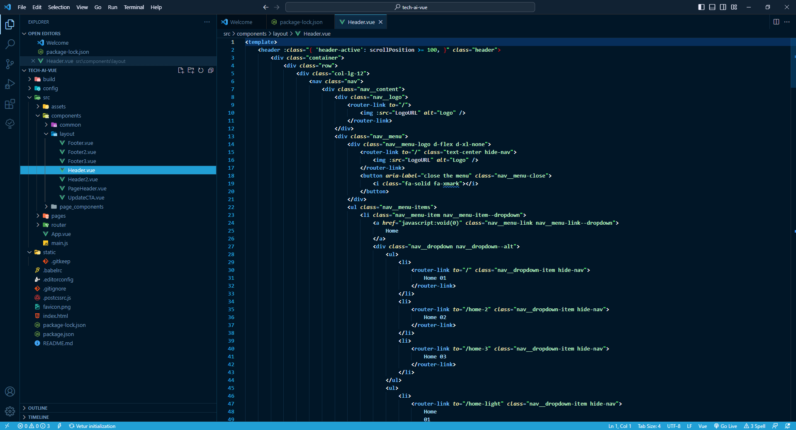
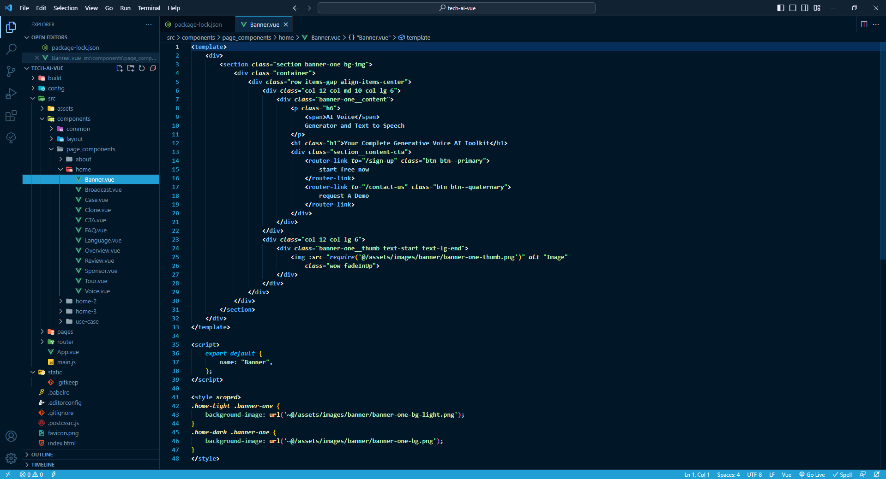
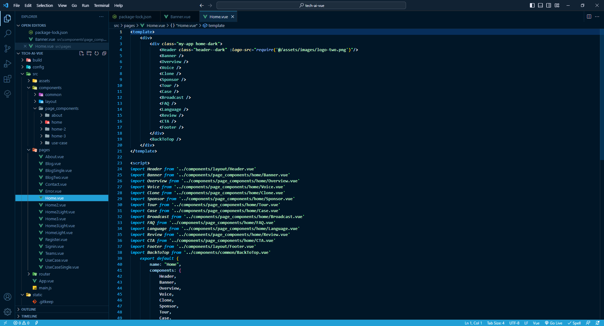

We would like to thank you for choosing TechAi - AI
Toolkit Vuejs Template
Getting started
TechAi is a modern Responsive Multi-Purpose Multi-Page
Vuejs template.
Template Features
Vue 2.5.2
HTML5 & CSS3
Bootstrap v5.x
Font-awesome
Custom Icon
No jQuery
Made with Sass
03 Awesome Homepage (Dark/Light)
Responsive Design
Pixel Perfect Design
Clean Code & Unique Design
Easy to Customize
W3C Validated Codes
What's Included
After purchasing TechAi template on themeforest.net with
your Envato account, go to your Download page. You can
choose to download TechAi template package which
contains the following files:
The contents of the template package downloaded from
ThemeForest
main-files - Vuejs template files.
You can edit and use this for your business.
documentation - This folder
contains what you are reading now :)
Dependencies
Dependencies used by Porto Vue Theme are listed here.
This includes the Header, Footer, Page Header and Call
to Action areas. You can customize these or add new
layout items here.

Project Layouts
Page Components
This includes the page components, which are later
assembled in pages by importing them.

Page Components
Pages
This is where page components are assembled and
displayed.

Pages
Directories
Tech AI Vuejs has well-organized, easily understandable
and customizable files structure. Once you see it, you
will understand at first glance.
Path
Description
build
Typically contains the configuration and scripts
related to building or bundling the application
for production. When you run the build command
(e.g., npm run build), Vue.js takes the source
code from the src folder and compiles, optimizes,
and bundles it into a more efficient and optimized
form in the build folder. The generated files in
the build folder are ready for deployment to a web
server or hosting platform.
config
Typically contains configuration files for various
aspects of the project. The contents of the config
folder may vary depending on the specific Vue.js
template or project setup being used.
dist
Typically used to store the output of the build
process. When you run the build command (e.g., npm
run build), Vue.js takes the source code from the
src folder, compiles, optimizes, and bundles it,
and then places the resulting files into the dist
folder.
src
In a Vue.js project, the src folder is the heart
of the application. It stands for "source" and
contains all the source code and assets that make
up the Vue.js application. The src folder is where
developers write their Vue.js components,
JavaScript files, styles, and other assets before
they are compiled and bundled into the final
application.
static
The static directory is directly mapped to the
server root and contains files that likely won't
be changed.
.babelrc
The .babelrc file is a configuration file for
Babel, a JavaScript compiler. Babel is used to
transpile modern JavaScript code (ES6+ syntax)
into older versions of JavaScript that are
supported by various browsers and environments.
This allows developers to write modern JavaScript
code while ensuring that it can run on older
browsers that may not support the latest language
features.
The .babelrc file is used to customize Babel's
behavior and specify which plugins and presets
should be used during the transpilation process.
It typically contains a JSON object that defines
Babel's configuration options.
.editorconfig
Used to define and maintain consistent coding
styles and formatting across different editors and
IDEs in a project.
To start working with the template, you need to take
these following steps.
1. Installation
Before going further, you have to install Node.JS and
NPM. Install Node.js and NPM : You can
download latest Node.js from
https://nodejs.org/en/download/
and install it on your system. NPM comes bundled with
Node.js Install npm packages : In terminal go
to your project root directory and run
npm install command, it will download all
the dependencies inside of node_modules folder.
2. Running Vue Development server
Run npm run dev command to run dev server
and access http://localhost:8080/ to run
your app/project on browser. The app will
automatically reload if you change any of the source
files.
3. Production Building
Run npm run build command to build the
project. The build artifacts will be stored inside the
dist directory.
Note
Images seen in the live preview are only set for
preview purposes. They are not included in the
download files.
How to customize
Tech AI Vue.js template is made with predefined layouts,
components, styles, and functionality, but you may want
to adjust or expand these features to match your project
requirements. Here's a short documentation on how to
customize this Vue.js template:
1. Understanding the Project Structure:
Familiarize yourself with the organization of the
Vue.js template. This includes identifying the main
folders such as src, components, assets, views, and
static. Understanding the folder structure will help
you locate and modify the relevant files.
2. Reviewing the Components:
Take a closer look at the existing Vue components in
the components folder. Get to know the purpose and
functionality of each component. This will help you
determine which components need customization.
3. Customizing Components:
To customize a component, open its .vue file. Inside
the file, you will find three sections: template,
script, and style. Make changes to the template
(HTML), styles (CSS or SCSS), or script (JavaScript)
sections as needed. You can add new elements, modify
existing ones, or change styles to match your
project's design.
4. Managing Assets:
If you need to use custom images, fonts, or other
static assets, place them in the assets folder. Once
the assets are added, you can reference them in your
components using relative paths.
5. Adding New Components:
If the template doesn't include components that suit
your project's needs, you can create new ones. Use the
Vue CLI to generate new components, or manually create
.vue files with the required template, script, and
style sections.
6. Configuring Router (if applicable):
If the Vue.js template uses Vue Router for navigation,
you can customize the routing configuration. Open the
router file (often named router.js or similar) and add
new routes or modify existing ones to accommodate your
project's pages.
7. Modifying Styles:
Customize the template's styles by editing the CSS or
SCSS files. You can override existing styles or add
new ones to achieve the desired look and feel of your
project.